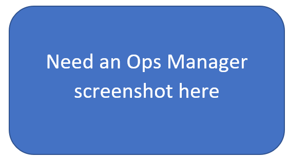

This topic describes how to deploy GigaSpaces products in a Kubernetes environment. The integration is packaged as a Helm chart. You can deploy the full GigaSpaces platform, using the Helm chart available in the GigaSpaces Helm repository.
The topics in this section assume basic knowledge of the GigaSpaces platform. If you aren't familiar with GigaSpaces, review the contents of the general Getting Started section before performing the tasks described here.
This topic describes how to do basic and intermediate-level deployment tasks for the Space and the GigaSpaces platform, using simple Helm commands.
Monitoring the Cluster in Kubernetes
After running the commands show below, you can monitor the cluster you deployed using any of the following administration tools.
helm status xapminikube dashboardkubectl get podsIn order to prepare the environment for use, first the Platform Manager must be deployed. This deploys two pods: the Manager pod, and the Operator pod.
Note that Platform Manager is deployed by using a Helm chart, but further operations are performed using the UI, CLI or REST-API tools.
Type the following Helm command to create a Management Pod called testmanager that deploys Manager and Operator pods:
The xap chart used in the following example is an "umbrella" chart that references more than one Helm chart.
helm repo add gigaspaces https://resources.gigaspaces.com/helm-charts
helm repo update
helm pull gigaspaces/xap --version= kubectl get pods command:NAME READY STATUS RESTARTS AGE
xap-grafana-5574c8bcd5-v2xsr 1/1 Running 0 5m14s
xap-influxdb-0 1/1 Running 0 5m14s
xap-operator-57d9d445ff-slsrr 1/1 Running 0 5m14s
xap-xap-manager-0 1/1 Running 0 5m14s grafana and influxdb, installed by default, provide the metrics and database engine to create grafana graphs for the system.
operator allows Kubernetes to create custom GigaSpaces resources, such as processing units (pus).
xap-manager is the central processing and management module of the GigaSpaces environment.
localhost:8090/services URL:
helm pull gigaspaces/xap-pu --version= kubectl get pods command:NAME READY STATUS RESTARTS AGE
demo-xap-pu-0 0/1 Running 0 10s
xap-grafana-5574c8bcd5-v2xsr 1/1 Running 0 7m34s
xap-influxdb-0 1/1 Running 0 7m34s
xap-operator-57d9d445ff-slsrr 1/1 Running 0 7m34s
xap-xap-manager-0 1/1 Running 0 7m34s
demo-xap-pu-0 1/1 Running 0 15s
localhost:8090/services URL:
helm install pu ./xap-pu/ --set manager.name=xap kubectl ???????? command:
????????????????????????????????????????????????????????????????????????
????????????????????????????????????????????????????????????????????????
????????????????????????????????????????????????????????????????????????localhost:8090/services URL:
Helm PU/Space deploy:
helm install demo gigaspaces/xap-pu --version 16.1.1 –-set manager.name=umbrella,ha=true,partitions=1,antiAffinity.enabled=true,properties="pu.dynamic-partitioning=true"Helm PU/Scale out/in:
kubectl patch pu demo -p ‘{“spec”:{“partitions”: 2}}’ --type=mergeBefore using these charts for the first time, you must fetch the chart, as described in
Use a basic Helm chart to start Manager, and then use GigaSpaces Tools (Ops Manager/CLI/API) for Processing Units management. This method uses Kubernetes Operator and provides all GigaSpaces functionality. It is the default and is described below.
Ensure that no CRDs are installed. Test this with kubectl get pus.
If there are PUs installed, and they are not in the Deployed state, Operator will continue trying to complete the installation until the processing unit is installed.
helm install manager gigaspaces/xap-manager --version 16.1.1 --set metrics.enabled=false helm install operator gigaspaces/xap-operator --version 16.1.1 --set manager.name=manager helm install pu gigaspaces/xap-pu --version 16.1.1 --set manager.name=manager --set metrics.enabled=false Run kubectl get pus and ensure that the deployed processing unit is in the Deployed state.
The following are examples of providing custom capabilities in the YAML file.
statefulSet:
metadata:
name: {{ .Release.Name }}
namespace: {{ .Release.Namespace }}
labels:
app.kubernetes.io/managed-by: gigaspaces-operator
spec:
selector:
matchLabels:
selectorId: {{ .Release.Name }}
template:
spec:
{{- if .Values.statefulSet.serviceAccountName }}
serviceAccountName: "{{ .Values.statefulSet.serviceAccountName}}"
{{- end }}
{{- if .Values.statefulSet.restartPolicy }}
restartPolicy: "{{ .Values.statefulSet.restartPolicy }}"
{{- else }}
restartPolicy: "Always"
{{- end }}
{{- if .Values.statefulSet.terminationGracePeriodSeconds }}
terminationGracePeriodSeconds: {{ .Values.statefulSet.terminationGracePeriodSeconds }}
{{- else }}
terminationGracePeriodSeconds: 30
{{- end }}
## new part
{{- if .Values.statefulSet.initContainers.enabled }}
initContainers:
- name: aws-cli
image: "{{ .Values.statefulSet.initContainers.image.repository }}:{{ .Values.statefulSet.initContainers.image.tag }}"
command: {{ .Values.statefulSet.initContainers.command }}
volumeMounts:
- mountPath: /artifacts
name: artifacts
readOnly: false
- name: check-manager-ready
image: "{{ .Values.image.repository }}:{{ .Values.image.tag }}"
command: ["tools/kubernetes/entrypoint.sh"]
args:
- "component=init"
- "verbose=true"
- "name={{ .Release.Name }}"
{{ if ( .Values.license) }}- "license={{ .Values.license}}"{{- end }}
{{ if ( .Values.manager.name) }}- "manager.name={{ .Values.manager.name}}"{{- end }}
{{ if ( .Values.manager.ports.api) }}- "manager.ports.api={{ .Values.manager.ports.api}}"{{- end }}
{{ if ( .Values.manager.discoveryTimeoutSeconds) }}- "manager.discoveryTimeoutSeconds={{ .Values.manager.discoveryTimeoutSeconds}}"{{- end }}
- name: check-external-service-ready
image: "{{ .Values.image.repository }}:{{ .Values.image.tag }}"
command: ["tools/kubernetes/entrypoint.sh"]
args:
- "component=init-pu-external-service"
- "verbose=true"
- "release.namespace={{ .Release.Namespace }}"
{{- end }}
## new end
securityContext:
{{- if .Values.statefulSet.securityContextFsGroup }}
fsGroup: {{ .Values.statefulSet.securityContextFsGroup }}
{{- else }}
fsGroup: 2000
{{- end }}
{{- end }}
The following configuration options can be specified when using a chart:
ha=true/false — each primary Data Pod has one backup Data Pod. Default is false.
metrics-enabled=true/false — enable or disable Grafana metrics. Default is true.
antiAffinity.enabled=true/false — spread the partitions across nodes. Default is false.
Problem:
Cannot delete pus (kubectl delete pus <pu name>), the delete command gets hung. This may occur when attempting to delete a processing unit and the CRD causes a system hang.
Resolution:
kubectl patch pus/pu -p '{"metadata":{"finalizers":[]}}' --type=merge See here for more information.
Problem:
Pod is not initializing but kubectl get pus shows it is in deployed state.
Resolution:
Execute kubectl logs <operator pod>. The logs will show custom and merged values. Check for problems with the merged values.